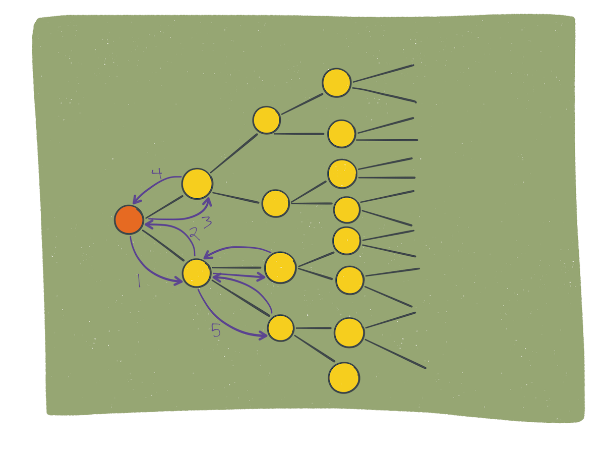
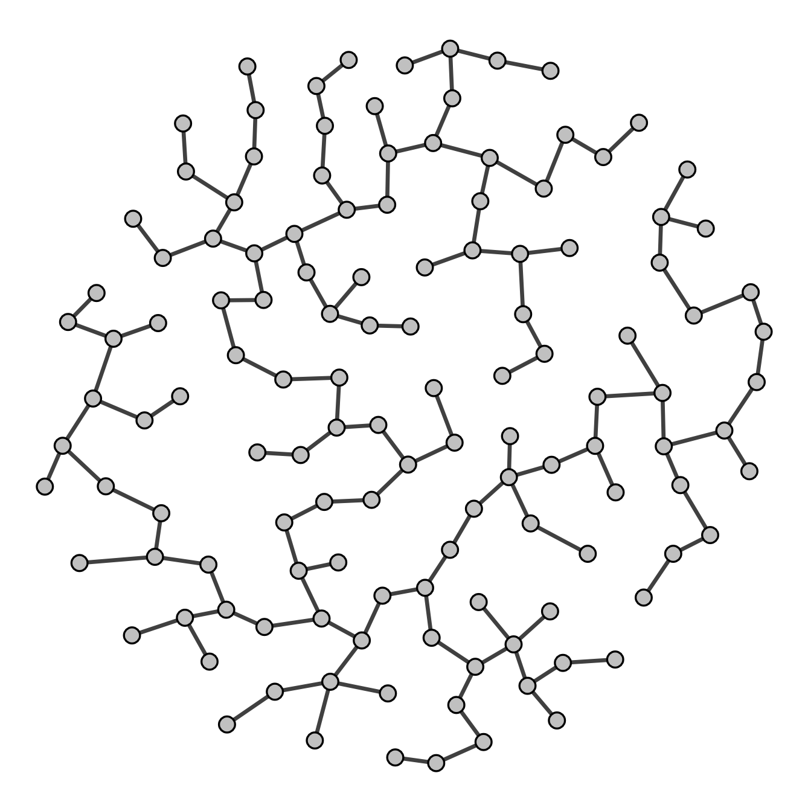

Huffman Tree Encoding

Breadth-First Search Algorithm
Depth-First Search Algorithm
Dijkstra's Shortest Path Algorithm

Prim-Jarnik Min Spanning Tree Algorithm
Prim-Jarnik Dijkstra's Refinement Min Spanning Tree Algorithm
Heap Algorithms